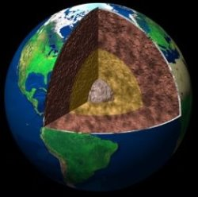

La Terre est la troisième planète par ordre d'éloignement au Soleil et la cinquième plus grande du Système solaire aussi bien par la masse que le diamètre. Par ailleurs, elle est le seul objet céleste connu pour abriter la vie. Elle orbite autour du Soleil en 365,256 jours solaires — une année sidérale — et réalise une rotation sur elle-même relativement au Soleil en 23 h 56 min 4 s — un jour sidéral — soit un peu moins que son jour solaire de 24 h du fait de ce déplacement autour du Soleila. L'axe de rotation de la Terre possède une inclinaison de 23°, ce qui cause l'apparition des saisons.
D'après la datation radiométrique, la Terre s'est formée il y a 4,54 milliards d'années. Elle possède un unique satellite naturel, la Lune, qui s'est formée peu après. L'interaction gravitationnelle avec son satellite crée les marées, stabilise son axe de rotation et réduit graduellement sa vitesse de rotation. La vie serait apparue dans les océans il y a au moins 3,5 milliards d'années, ce qui a affecté l'atmosphère et la surface terrestre par la prolifération d'organismes d'abord anaérobies puis, à la suite de l'explosion cambrienne, aérobies. Une combinaison de facteurs tels que la distance de la Terre au Soleil (environ 150 millions de kilomètres — une unité astronomique), son atmosphère, sa couche d'ozone, son champ magnétique et son évolution géologique ont permis à la vie d'évoluer et de se développer. Durant l'histoire évolutive du vivant, la biodiversité a connu de longues périodes d'expansion occasionnellement ponctuées par des extinctions massives ; environ 99 % des espèces qui ont un jour vécu sur Terre sont maintenant éteintes. En 2020, plus de 7,7 milliards d'êtres humains vivent sur Terre et dépendent de sa biosphère et de ses ressources naturelles pour leur survie.
La Terre est la planète la plus dense du Système solaire ainsi que la plus grande et massive des quatre planètes telluriques. Son enveloppe rigide — appelée la lithosphère — est divisée en différentes plaques tectoniques qui migrent de quelques centimètres par an. Environ 71 % de la surface de la planète est couverte d'eau — notamment des océans, mais aussi des lacs et rivières, constituant l'hydrosphère — et les 29 % restants sont des continents et des îles. La majeure partie des régions polaires est couverte de glace, notamment avec l'inlandsis de l'Antarctique et la banquise de l'océan Arctique. La structure interne de la Terre est géologiquement active, le noyau interne solide et le noyau externe liquide (composés tous deux essentiellement de fer) permettant notamment de générer le champ magnétique terrestre par effet dynamo et la convection du manteau terrestre (composé de roches silicatées) étant la cause de la tectonique des plaques.
STRUCTURE
L'intérieur de la Terre, comme celui des autres planètes telluriques, est stratifié, c'est-à-dire organisé en couches concentriques superposées, ayant des densités croissantes avec la profondeur. Ces diverses couches se distinguent par leur nature pétrologique (contrastes chimiques et minéralogiques) et leurs propriétés physiques (changements d'état physique, propriétés rhéologiques).
La couche extérieure de la Terre solide, fine à très fine relativement au rayon terrestre, s'appelle la croûte; elle est solide, et chimiquement distincte du manteau, solide, sur lequel elle repose ; sous l'effet combiné de la pression et de la température, avec la profondeur, le manteau passe d'un état solide fragile (cassant, sismogène, « lithosphérique ») à un état solide ductile (plastique, « asthénosphérique », et donc caractérisé par une viscosité plus faible, quoique encore extrêmement élevée). La surface de contact entre la croûte et le manteau est appelée le Moho ; il se visualise très bien par les méthodes sismiques du fait du fort contraste de vitesse des ondes sismiques, entre les deux côtés. L'épaisseur de la croûte varie de 6 kilomètres sous les océans jusqu'à plus de 50 kilomètres en moyenne sous les continents.
La croûte et la partie supérieure froide et rigide du manteau supérieur sont appelés lithosphère ; leur comportement horizontalement rigide à l'échelle du million à la dizaine de millions d'années est à l'origine de la tectonique des plaques. L'asthénosphère se trouve sous la lithosphère et est une couche convective, relativement moins visqueuse sur laquelle la lithosphère se déplace en « plaques minces ». Des changements importants dans la structure cristallographique des divers minéraux du manteau, qui sont des changements de phase au sens thermodynamique, vers respectivement les profondeurs de 410 kilomètres et de 670 kilomètres sous la surface, encadrent une zone dite de transition, définie initialement sur la base des premières images sismologiques. On appelle manteau supérieur la couche qui va du Moho à la transition de phase vers 670 kilomètres de profondeur, la transition à 410 kilomètres de profondeur étant reconnue pour ne pas avoir une importance majeure sur le processus de convection mantellique, au contraire de l'autre. Par conséquent, on appelle manteau inférieur la zone comprise entre cette transition de phase à 670 kilomètres de profondeur et la limite noyau-manteau.
Sous le manteau inférieur, le noyau terrestre, composé d'environ 88 % de fer, constitue une entité chimiquement originale de tout ce qui est au-dessus, à savoir la Terre silicatée. Ce noyau est lui-même stratifié en un noyau externe liquide et très peu visqueux (viscosité de l'ordre de celle d'une huile moteur à 20 °C), qui entoure un noyau interne solide, également appelé graine. Cette graine résulte de la cristallisation du noyau du fait du refroidissement séculaire de la Terre. Cette cristallisation, par la chaleur latente qu'elle libère, est source d'une convection du noyau externe, laquelle est la source du champ magnétique terrestre. L'absence d'un tel champ magnétique sur les autres planètes telluriques laisse penser que leurs noyaux métalliques, dont les présences sont nécessaires pour expliquer les données astronomiques de densité et de moment d'inertie, sont totalement cristallisés. Selon une interprétation encore débattue de données sismologiques, le noyau interne terrestre semblerait tourner à une vitesse angulaire légèrement supérieure à celle du reste de la planète, avançant relativement de 0,1 à 0,5° par an